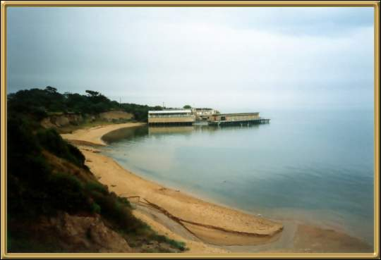

This photo was taken in Winter. As is much of the coast of Victoria, it's quite a stunning area, and Dad assures me it's a great place to sail from. You can see the Yacht Club in the distance.
Photographer: Mark Stokes